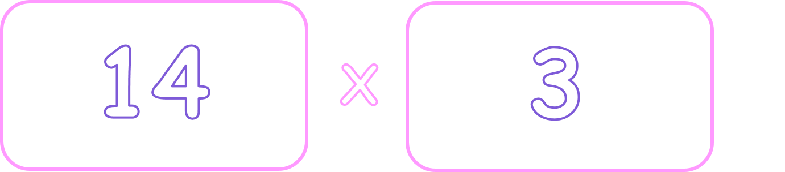
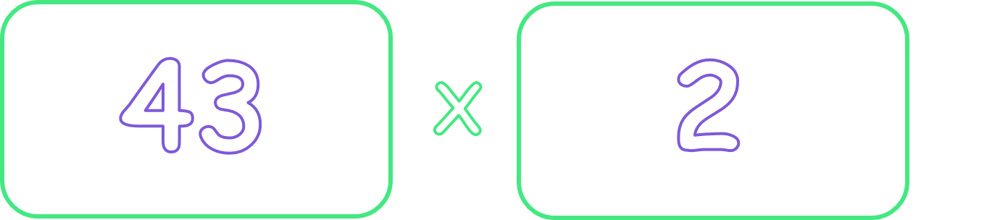
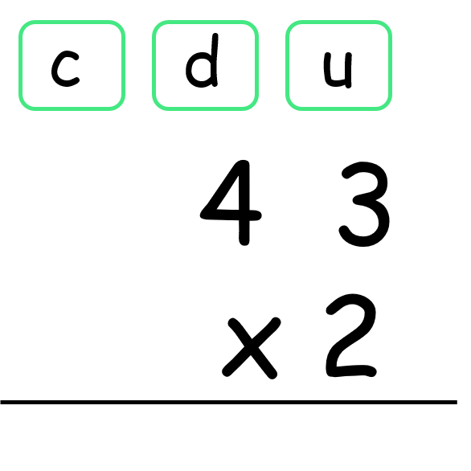
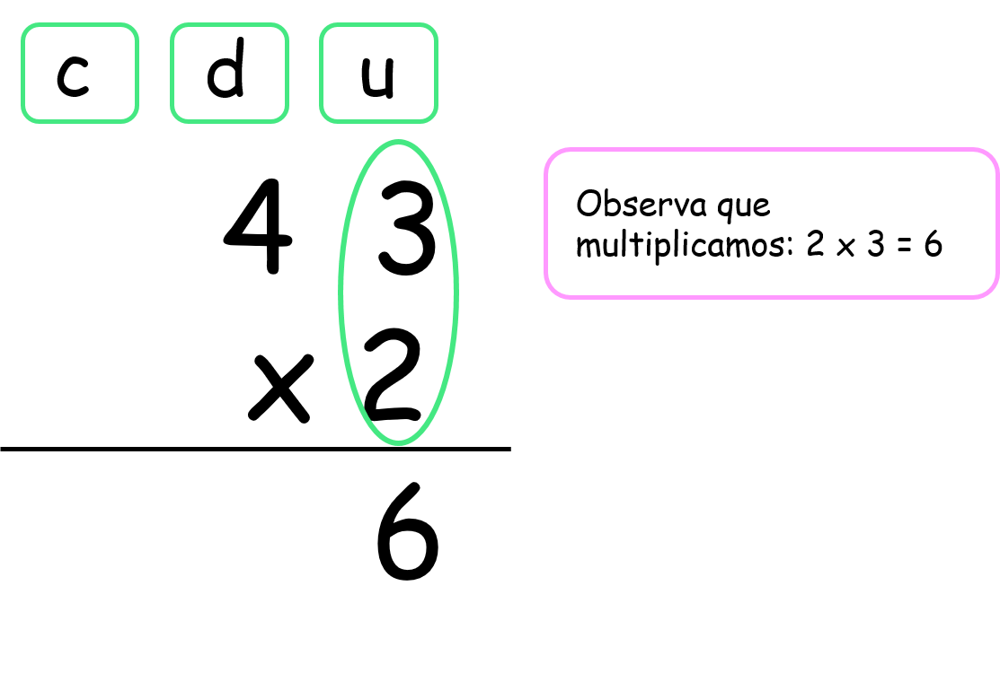
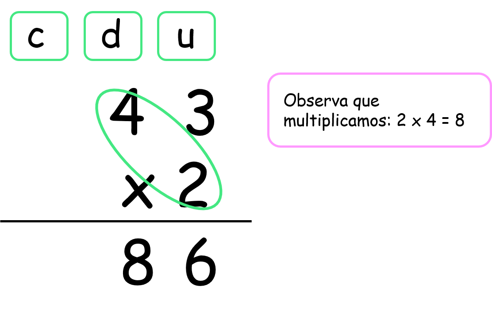
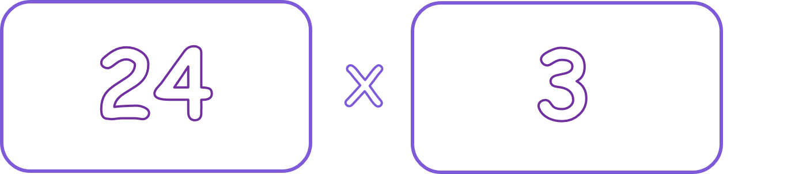
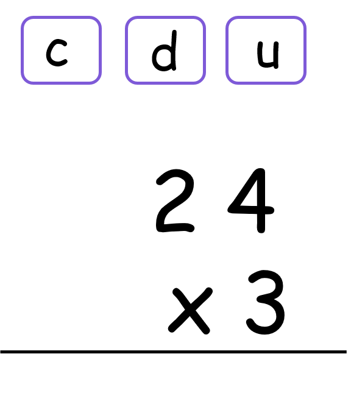
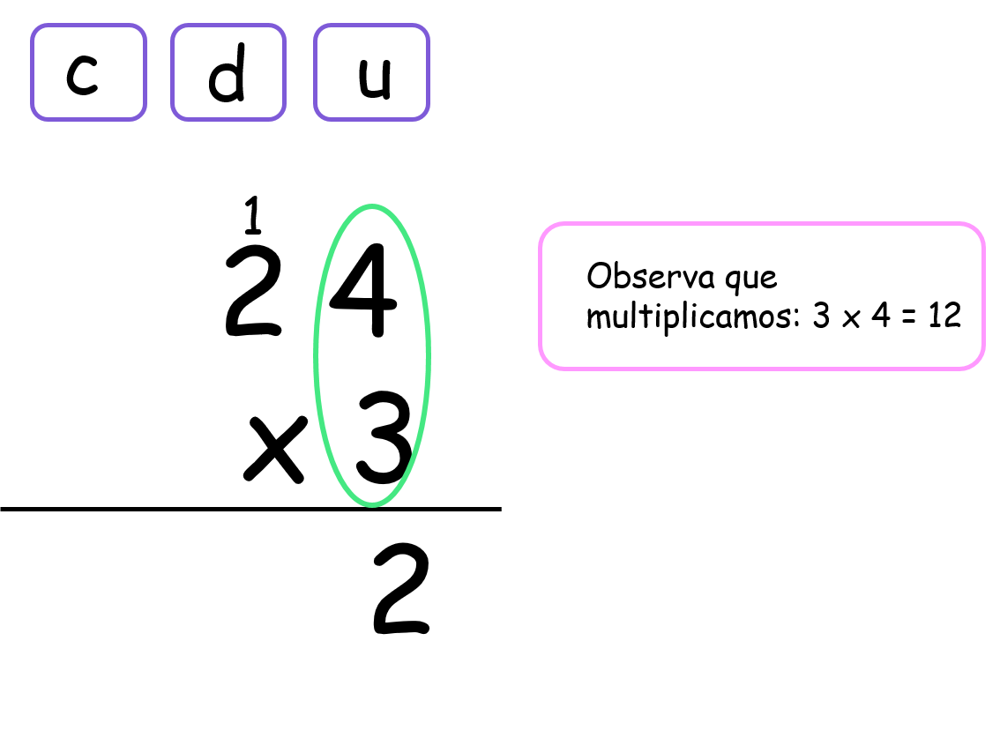
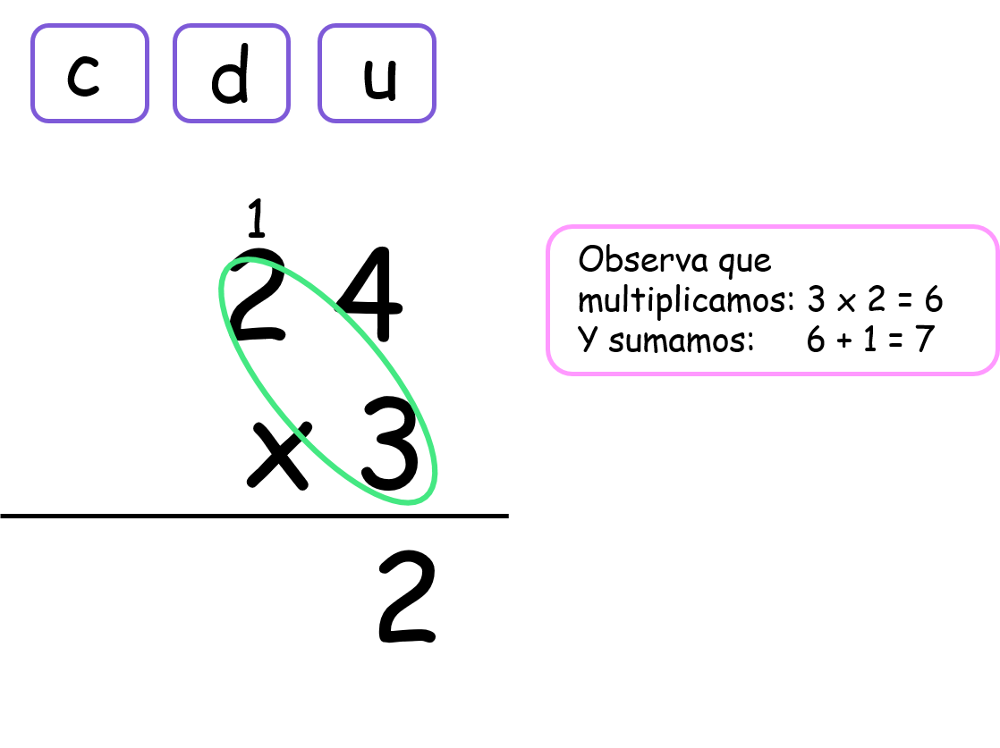

Multiplicación por una cifra
En este capítulo vas a usar las tablas de multiplicar
¿Qué es la multiplicación por una cifra y para qué nos sirve?
La multiplicación por una cifra es una operación matemática en la cuál vas a necesitar de las tablas de multiplicar, cada operación puede tener una tabla diferente. Aprendiendo a multiplicar por una cifra va a ser mucho más fácil aprender después a multiplicar cantidades mayores y a realizar operaciones de más complejidad como multiplicaciones por dos y tres cifras.
La multiplicación por una cifra nos sirve para saber el resultado entre un número más grande que diez y un número igual o menor a 9.
Observa:
Si recuerdas las tablas que estudiamos en los post anteriores llegaban solo hasta 10 (2 x 10, 3 x 10, 4 x 10) y esto es porque son los números que más frecuentemente usamos. Para multiplicar números más grandes planteamos una multiplicación de una cifra.
- ¿Qué vamos a aprender?
- Multiplicación por una cifra sin llevar
- Multiplicación por una cifra llevando
(1)Multiplicación por una cifra sin llevar
Para multiplicar por una cifra sin llevar vamos a seguir estos pasos:
Vamos a multiplicar:
A. Paso 1:
Ubicamos los números en las casillas a las que corresponden, ya sean las unidades, las decenas o las centenas.
Observa que el primer número que es 43 tiene dos cifras por lo tanto ocupa dos casillas, las unidades y las centenas. Y el número por el cual vamos a multiplicar a 43 es 2, el 2 solo tiene una cifra por lo tanto debe ir en las unidades.
B. Paso 2:
Iniciamos la multiplicación empezando siempre por las unidades.
Observa:
C. Paso 3:
Multiplicamos ahora a las decenas.
Observa:
Y listo! ya terminamos la multiplicación por una cifra sin llevar.
(2)Multiplicación por una cifra llevando:
Para multiplicar por una cifra llevando vamos a seguir estos pasos:
Vamos a multiplicar:
A. Paso 1:
Ubicamos los números que vamos a multiplicar en las casillas correspondientes ya sean las unidades, las decenas o las centenas.
B. Paso 2:
Ahora pasamos a multiplicar a las unidades primero.
Observa:
Como el resultado entre 3 x 4 es 12 y este es un número de 2 cifras debemos escribir solo las unidades debajo de las unidades y las decenas con las decenas. Observa entonces que, el 2 se queda en la casilla de las unidades y el 1 se va a la casilla de las decenas.
C. Paso 3:
Ahora pasamos a multiplicar a las decenas y al resulatdo le sumamos el 1 que llevamos.
Observa:
Y listo! ya hicimos una multiplicación por una cifra llevando.
Material extra para trabajar el tema de multiplicación por una cifra:
En el siguiente enlace podrás descargar un pdf con multiplicaciones de dos cifras por un número creado por Orientacionandujar.es
Aquí encontrarás un juego virtual en el cual podrás repasar las tablas de multiplicar creado por Supersaber.com
Vídeos orientativos:
En el vídeo "La multiplicación" de laeduteca.blogspot.com encontarrás una explicación gráfica sobre la multiplicación.